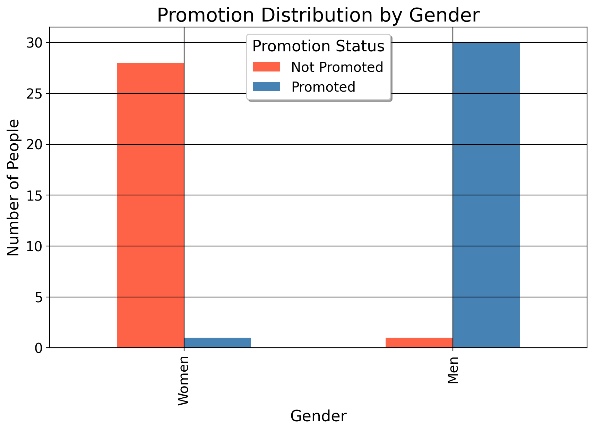

5 Correlation and Association
As Gregory House once said, “The cave man who heard a rustle in the bushes checked out to see what it was lived longer than the guy who assumed it was just a breeze”. House’s point here is that the human ability for hypothetical reasoning and the ability to form associations in our minds was critical to our survival and development. In this case of course, we learned to check the bush since it could be a sabretooth or another human who wanted to eat us or steal our food, and we also learned to reason that checking things out, spear in hand, was more likely to keep us safe than rolling the dice by not checking. We will discuss the aspect of statistical reasoning that covers hypothetical reasoning later, but for now we cover simple correlation and measures of association. In statistical analysis, we typically begin by looking at bivariate correlations. We calculate a statistic called “Pearson’s \(r\)”. The formula for Pearson’s \(r\), the Pearson correlation coefficient for continuous variables, is: \[ r = \frac{\sum_{i=1}^{N} (x_i - \bar{x})(y_i - \bar{y})}{\sqrt{\sum_{i=1}^{N} (x_i - \bar{x})^2} \sqrt{\sum_{i=1}^{N} (y_i - \bar{y})^2}}. \] Let’s parse these terms, shall we? The numerator is the formula for what we call the covariance between two random variables. It is the sum of the differences between the individual datapoints for each variable and its average, divided by the product of the standard deviations of each variable. More practically, \(r\) represents how variables tend to move together, given how much their values move internally (hence the standard deviation term). As a quick example, let’s compute the Pearson correlation coefficient \(r\) for the following data points \(x= \{1, 2, 3, 4\}\) and for \(y\) we have \(y = \{2, 4, 5, 7\}.\)
Here is the computation…
First we calculate the means of \(x\) and \(y\): \[ \begin{aligned} &\bar{x} = \frac{1 + 2 + 3 + 4}{4} = 2.5 & \bar{y} = \frac{2 + 4 + 5 + 7}{4} = 4.5 \end{aligned} \] Then compute the differences from the mean for each data point: \[ \begin{aligned} & x_i - \bar{x} = \{-1.5, -0.5, 0.5, 1.5\} & y_i - \bar{y} = \{-2.5, -0.5, 0.5, 2.5\}. \end{aligned} \] Then calculate the sum of the products of these differences: \[ \begin{aligned} &\sum (x_i - \bar{x})(y_i - \bar{y}) = \\ &(-1.5 \cdot -2.5) + (-0.5 \cdot -0.5) + (0.5 \cdot 0.5) + (1.5 \cdot 2.5) = \\ &3.75 + 0.25 + 0.25 + 3.75 = 8. \end{aligned} \]
Next, we compute the sum of the squared differences for \(x\) and \(y\). For \(x\) we have \[ \begin{aligned} &\sum (x_i - \bar{x})^2 = \\ &(-1.5)^2 + (-0.5)^2 + (0.5)^2 + (1.5)^2 = \\ & 2.25 + 0.25 + 0.25 + 2.25 = 5. \end{aligned} \] For \(y\) we have \[ \begin{aligned} &\sum (y_i - \bar{y})^2 = \\ &(-2.5)^2 + (-0.5)^2 + 0.5^2 + 2.5^2 = \\ &6.25 + 0.25 + 0.25 + 6.25 = 13. \end{aligned} \]
Now, we plug these in: \[ r = \frac{\sum (x_i - \bar{x})(y_i - \bar{y})}{\sqrt{\sum (x_i - \bar{x})^2} \sqrt{\sum (y_i - \bar{y})^2}} = \frac{8}{\sqrt{5} \cdot \sqrt{13}} = \frac{8}{\sqrt{65}} = \frac{8}{8.062} \approx \boxed{0.993}. \]
Okay, so our correlation coefficient is 0.993. We’d say there’s a strong, positive linear relationship between our variables here (whatever they happen to be). Similarly, if \(r\) were negative, we’d say there’s a strong negative relation. Of course, if the coefficient were, say, 0.01 or -0.01, we’d say there’s pretty much no relationship between the variables.
Here’s how we’d visualize these.
We can think of \(r\) as the degree to which one variable moves with another variable. If the relationship were just \(r=1\) or \(r=-1\), we’d say for every one increase in \(x\), there’s a guaranteed increase/decrease in \(y\) respectively because they move identically. For a simple example of a perfect linear relation, consider a dataset with the number of games an NBA team won in one column versus how many they lost in another column. For simplicitly, let’s consider the first ten games. If a team won 5, they also lost 5. If a team won 6, they must’ve lost 4. There’s a perfect, inverse linear relaionship between these; to win the first game necessarily means you’ve lost 0 games yet, and to lose the first means you’ve won none just yet.
For those who care about the “statistical significance” of \(r\) …
As for mean differences, we can also use the t-statistic for the correlation coefficient to determine statistical significance. So let’s use the example above. First, here is the formula for the t-statistic:
\[ t = \frac{r \sqrt{n-2}}{\sqrt{1-r^2}} \]
where \(r\) is the Pearson correlation coefficient and \(n\) is the number of data points. Given:
\[ \begin{aligned} &r \approx 0.993 \\ &n = 4, \end{aligned} \]
we can begin by plugging in our values. First, we compute the variance in the denominator by squaring our \(r\):
\[ r^2 = 0.993^2 = 0.986049 \]
Then, we compute how much our one variable \(x\) does NOT explain the variance of the other variable:
\[ 1 - r^2 = 1 - 0.986049 = 0.013951 \]
For our numerator, we compute:
\[ \sqrt{n - 2} = \sqrt{4 - 2} = \sqrt{2} \approx 1.414 \]
Next, in the denominator, this simplifies to:
\[ \sqrt{1 - r^2} = \sqrt{0.013951} \approx 0.118 \]
Finally, we compute:
\[ t = \frac{0.993 \cdot 1.414}{0.118} \approx \frac{1.404102}{0.118} \approx 11.899 \]
Thus, the t-statistic for the given Pearson’s \(r\) is approximately \(\boxed{11.899}\). Since \(11.9>>1.96\), we’d say the linear association is statistically significant.
Important
You will never do this by hand (at least I never have!), I include this section only to show it’s possible.
Okay, these computations are fine. But what do they mean? This is the first true exercise of your statistician brain. The point of this course is not to learn statistical software or become an econometrician, it’s to develop a mindset to think like a statistician.
5.1 The First Exercise of the Statistical Mind
Earlier this morning, I was on Facebook and one of my friends posted a picture that cited a story of a public school music teacher named Annie Ray winning a Grammy. In the article, they say [caps theirs]
THE FACTS ABOUT THE IMPORTANCE OF MUSIC EDUCATION DON’T LIE… Schools that have music programs have significantly higher graduation rates than do those without music programs (90.2 percent as compared to 72.9 percent).
For visualization, let’s do some graphing shall we? The plot on the left plots the rates from the quote, the right plot is simulated data.

This quote right here instantly, like a hairtrigger, caused fire alarms to sound in my “statistician brain” (which you will also develop in this course so it reacts like this). Why? Because the article (and reporting on music education more broadly) misleadingly discusses these statistics. Note that this does NOT mean that these statistics are wrong in terms of their computation. Presumably whoever did this used Excel or Stata or R to get these numbers, and I trust that the numbers are accurate.
My criticism has to do with the practical implications. The heavy suggestion here is that the music programs are causing this 17.3 percentage point difference in graduation rates. And in fairness, this is not a completely crazy idea: music does indeed help people learn languages (helped me learn Spanish and it likely made me a better reader). In fact, in another life, I was a music theorist who could do harmonic analysis of chord progressions and tell you what I thought the artist was trying to communicate. And as a matter of fact, it likely made me an even better econometrician, because one thing music analysis teaches you about is context. And in larger context, these statistics seem misleading.
The suggestion is essentially that if more schools just had music programs, we’d see higher graduation rates. And yes, to some degree, some students who now have the opportunity to learn music may go on to study and succeed in music now they they have the opportunity to do so. But how many people would this affect, honestly? Not everyone.
In fact, most people do not want to go on to be musicians because learning music is a non-trivial investment of time and money, which everyone doesn’t have the means or work ethic to pursue. So if 20 more students in a school of 5000 and a graduating class of 300 reap the beenfits of music, is this really enough to move the proverbial needle on the graduation rate? Not likely.
More to the point however, not every school has the means to have a music program, nevermind a well funded music program. In the U.S., schools are funded by property taxes in public schools and by extremely wealthy donors at private schools. This means that the wealthier public schools will be located in wealthier districts with a bigger tax base. What do those districts have more of? Money! Status, class, opportunity. Instruments do not grow on trees, they cost money; not every school has 12000 dollars for a Steinway piano.
In other words, how do we know that these graduation rate differences are not explained in part (if not entirely) by baseline differences in socioeconomic status of communities, opportunities of individual families, the effects those have on individual students, all of which will certainly affect the graduation rate of one school versus another school. There may also be what we call “selection bias” here, where some schools have magnet programs specifically designed for people who want to (and can) pursue music, and thus are selecting individuals (mostly from wealthier districts or better-to-do families) who would perform well in the very first place.
This again does not discount the real benefits of music education! But when we read statistics, as with music chords, we also need to understand the context they exist within. As we see from the simulated plot, some schools have a graduation rate of almost 0 %. And while I couldn’t find specific examples of this when I looked up data on it, numbers this low do happen anecdotally.
The point of this discussion is to get you thinking in a multivariate manner, which means to understand and think of the world as a complex place that oftentimes is not as simple as people make it out to be. As we will see later when we cover regression analysis, the world rarely works off of pretty, linear functions. Statistics teachers (presumably) say a lot that correlation is not causation, but this is what they mean by it in practice. Measures of simple association do not mean that something is causing another thing, and as researchers and as human beings, we must constantly be skeptical of simplistic claims and investigate, being quite suspiscious of claims that semm too good to be true.
5.2 Tying This in With Asymptotic Theory
As we learned before, statistics is justified oftentimes on large scale asymptotics, where we consider an infinte population of units to sampel from. In this framework, there’s there being a population coefficient/mean and a sample one. Suppose we have some variable \(m \in \{0,1\}\) which denotes a school having a music program or not. If we simply believed the article I cited above, we’d say that “the effect” of music education (or the difference between schools with and without music programs) is around 17.3 percentage points.
But this cannot be! As we’ve discussed, many more factors will affect not just whether a school has a music program and their graduation rates. If we were to simply take the mean difference of schools with music programs and those without in terms of graduation rates, even if we had access to every single high school and college on the planet, we would never converge to the population mean for the “effect” of music education because of the baseline differences between these schools/their districts; our estimate would be very far from the true effect. We would indeed have very narrow confidence intervals, but as far as establishing causality, we’d still need much work to do.
5.3 Implications
The reason this matters for policy analysts is because when taken to its conclusion, mistaken correlation for causation or not thinking about things in a systemic, complicated way could result in pumping more money into music programs in order to fix failing schools, a much wider and more sophisticated problem.
It leads to things like pumping more money into police deparmtents to decrease crime rates, even though crime has been falling in general for decades in the U.S. and there’s no real link between militant policing measures and crime reduction.
It also leads to things like mass like many modern governemnts doing things like making dating apps and sponsoring mass dating events (yes, really!) in order to increase birth and marriage rates.
The idea of course is that people aren’t having kids or getting married because they’re not meeting one another. And if more people met, the more kids they’d have. And to a degree this is true due to things like social media, so the underlying logic makes plenty of sense. But then, once we agree to this probelm, we have to ask why are people not meeting one another and having kids or getting married? The real problem is a lot more systemic. Especially in South Korea, Japan, and China, the reasons are mostly having to do with labor issues, changes in gender norms, and broader social factors which lead to people not wanting to have kids.
6 Summary
Correlation and causation is a very delicate topic in statistics. Whenever we’re doing research, we must always be careful to structure our studies in such as way that our findings are not corrupted by other factors, even if our software tells us we’ve found a “statistically significant” correlation. I’m sure if we took the t-statistic of music programs and graudation (or funding of music programs, as my scatterplot does), we’d find a very high t-statistic for the correlation coefficient. Equally, we’d find a high t-statistic for countries reporting increases in loneliness and low fertility rates. But I don’t care, and neither should you, since there are other factors which contribute to graduation aside from music, and a lot more factors driving fertility rates than simple loneliness or lack of opportunity to meet people.
Thinking causally can be a challenging thing. After multiple years of torment, you will learn to think like this as if by muscle memory since it’ll be so routine to you. We will cover this in more detail in our chapter on treatment effect estimation.